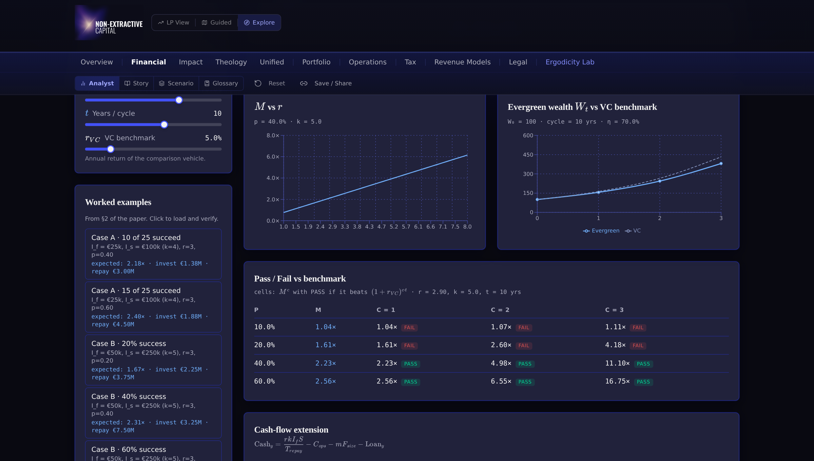
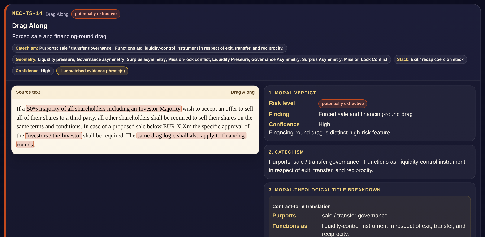
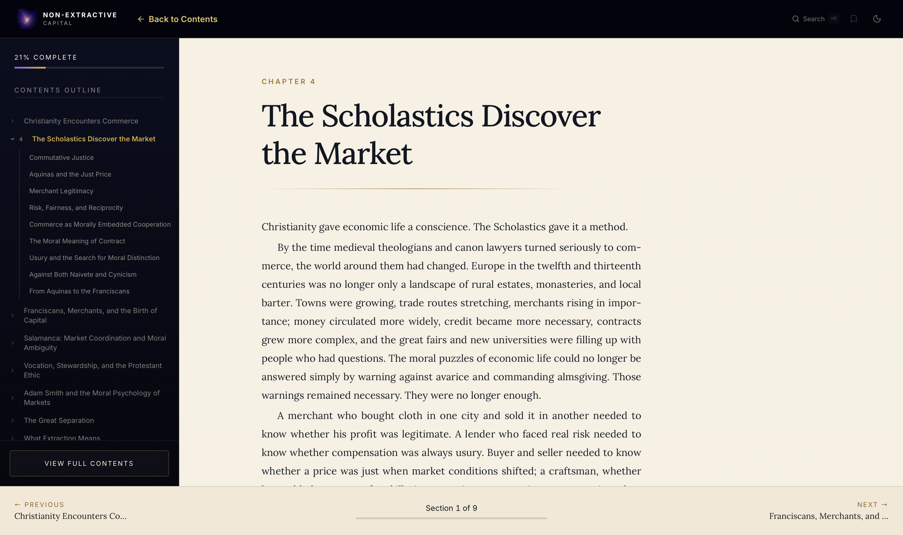

Non-Extractive Capital
Digital infrastructure needs ownership structures that keep it sovereign.
NEC is developing the Digital Sovereignty Fund to finance steward-owned, open-source, public-interest digital infrastructure in Europe.
The Simulator
The fund model, live.
The DSF Portfolio Simulator is the fund's published mathematics made explorable. Every parameter is a slider: portfolio survival, capped returns, evergreen recycling, the usury metric. The design trade-offs move the outcome in front of you. A research tool, not an offering document; nothing in it is a projection. Open the simulator

The simulator's financial explorer: illustrative model behavior from the published working papers, not a projection or an offer.
The Contract Analyzer
Real contracts, read morally.
Non-extractive capital takes a fair, bounded return for real risk carried, and no more. The NEC Contract Analyzer applies that test to real financing contracts clause by clause, and assembles a verdict (licit, cautionary, potentially extractive, or severe), with the reasoning shown at every step. The published Clause Dossiers score a real venture term sheet, the standard startup instruments, and NEC's own fund documents, held to the same test. Open the Clause Dossiers

A clause dossier from a real term-sheet analysis: the drag-along clause, its verdict, and the reasoning; counterparty details removed.
The Book
Moral Economy
A sweep of the moral-economy tradition, from the Scholastics and Salamanca through Adam Smith to what extraction means today, and what that tradition asks of capital now. It is the ground NEC's usury metric and the Contract Analyzer's categories are built on, readable online in a chaptered edition. Read Moral Economy online

The online edition: chaptered and searchable, in light or dark.
“Finance for its own sake is fundamentally different from finance aimed at the development, creation and evolution of work.”Magnifica Humanitas · Pope Leo XIV